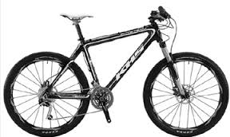

Cross-country

Sepeda Cross-country race.Apabila anda pecinta off
road dan ingin melewati medan dengan jarak ber mil-mil secepat mungkin ,
dengan menggunakan travel 3 hingga 4 inch (8 hingga 10 cm), terkadang
menghadapi medan curam , dan berat badan bertumpu agak kedepan saat
berkendara , sepeda cross country akan bekerja cukup baik buat anda pada
track sedang , mudah dikendalikan , dan kita akan menggowesnya secepat
malaikat pencabut nyawa(wicak).
Sepeda Cross-country trail. Sepeda Cross-country
trail adalah sarana berkendara yang cukup baik untuk menghadapi berbagai
karakteristik jalur semi extreem. Mereka mealui tanjakan cukup baik dan
mengatasi berbagai medan dengan kenyamanan serta efisiensi sangat
tinggi . Dengan menggunakan travel antara 4 hingga 5 inch (10 sampai 13
cm ); 5 inch telah menjadi standard. apapbila anda ingin menikmati
berbagai variasi berkendara , pakailah speda jenis ini.